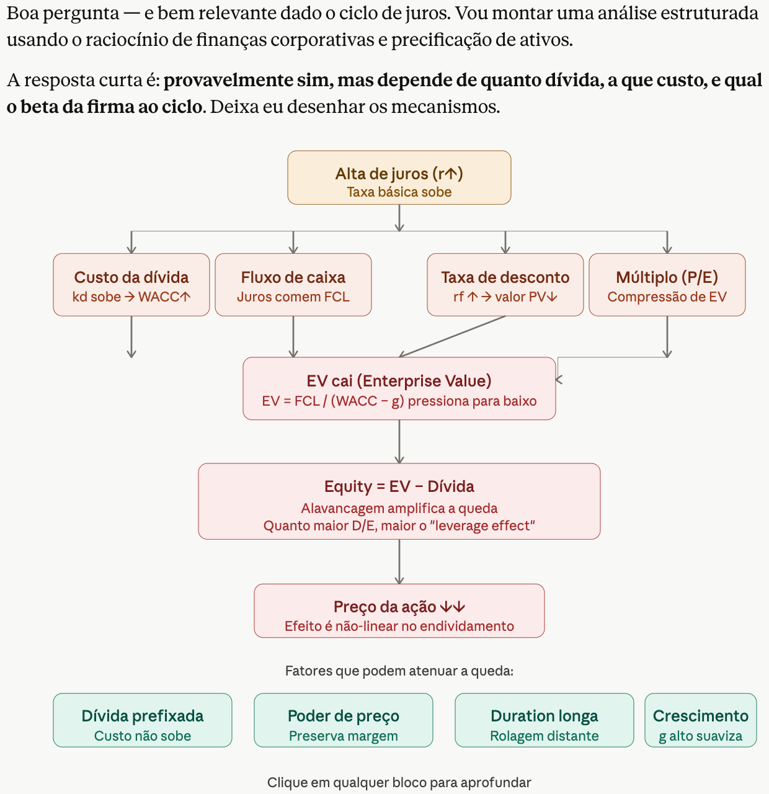
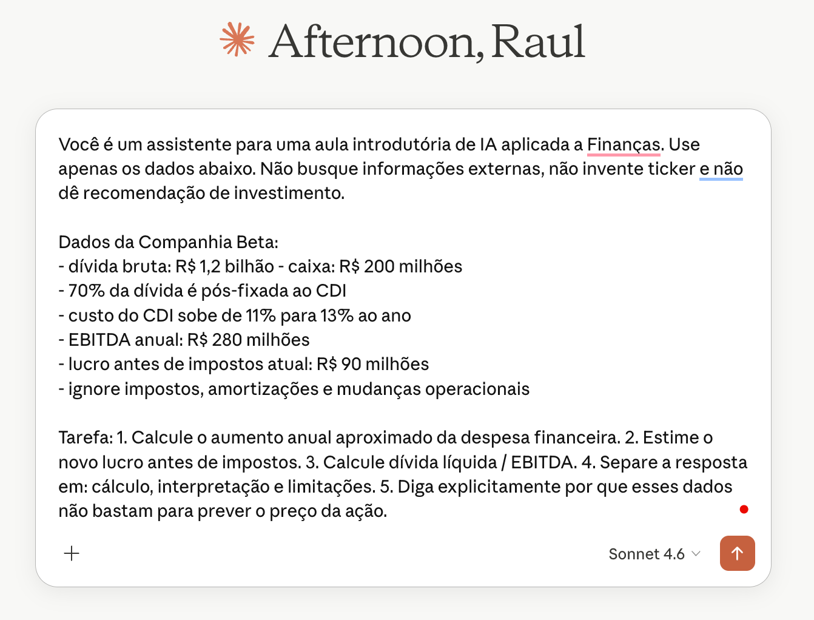

IA Aplicada a Finanças
FURG - Escola SBFin
Raul Riva
Maio, 2026
Intro
Quem sou eu
- Graduação e Mestrado em Economia na FGV EPGE
- Doutorado em Finanças na Northwestern University
- Pesquisa em Finanças, Econometria, e métodos de Aprendizado de Máquina
- Contato: rgriva.github.io | @rgriva no GitHub

Quem são vocês?
- Majoritariamente estudantes de graduação
- Diversos cursos representados
- Interesses diversos em Finanças e AI
Grau de ensino
Curso

Conforto com programação

Percepção sobre IA

Plano de Voo
- Dia 1: como IA pode ser útil em Finanças e Economia?
- Dia 2: ferramentas de IA, workflows, escrevendo código com agentes, …
- Dia 3: três exemplos ao vivo
Material do minicurso: https://github.com/rgriva/minicurso_FURG_SBFin
IA, LLMs, Machine Learning?…
Primeiro mapa mental
IA
Objetivo amplo: máquinas executando tarefas que associamos a inteligência.
Machine Learning
Método: aprender padrões a partir de dados, em vez de programar todas as regras.
Deep Learning
Família de ML baseada em redes neurais profundas e muitos dados.
LLMs
Modelos de linguagem em larga escala: texto, código e interação em linguagem natural.
Produtos comerciais de IA
LLMs
Modelos treinados para linguagem, código e interação em contexto.
→
ChatGPT OpenAI: assistente geral, arquivos, dados, imagens, código e agentes.
Claude Anthropic: alternativa próxima ao ChatGPT, forte em documentos, escrita e código.
Gemini Google: busca, Android, Workspace e uso multimodal.
Copilot Microsoft e GitHub: Office, Teams, IDEs e escolha entre modelos.
Eles são produtos, não apenas modelos!
Perspectiva histórica
1950
Turing pergunta se máquinas podem “pensar”
1956
Dartmouth populariza o termo inteligência artificial
1980s
Sistemas especialistas baseados em regras
1990s
ML estatístico cresce com dados e computação
2012
Deep learning avança em visão computacional
2017
Transformers mudam NLP e modelos generativos
2022+
LLMs chegam ao público via chat
O que Machine Learning aprende?
Dados estruturados
- preços
- balanços
- cadastros
- séries temporais
- ratings
Dados não estruturados
- textos
- imagens
- áudio
- PDFs
- páginas web
O modelo aprende uma relação aproximada entre inputs e outputs.
Exemplo simples de ML
Pergunta: quais clientes têm maior risco de inadimplência?
Input: dados históricos
- renda
- histórico de pagamento
- idade da conta
- valor da dívida
Output
- probabilidade de atraso
- ranking de risco
- alerta para revisão humana
Importante: escopo para discriminação?…
LLMs: o truque conceitual
- Treinados em grandes coleções de texto e código
- Aprendem padrões de linguagem, contexto e instruções
- Produzem uma continuação plausível para o que foi pedido
- Podem usar ferramentas: busca, arquivos, planilhas, código, APIs
Atenção
Eles não “sabem” do mesmo modo que uma pessoa sabe. A validação continua sendo parte do seu trabalho como humano.
O que mudou com LLMs?
- Interface: conversar em linguagem natural (quase qualquer idioma)
- Escopo: texto, código, imagens, dados e documentos
- Velocidade: primeiro rascunho em segundos
- Alinhamento: reinforcement learning ajudou a ajustar respostas ao que humanos preferem
- Acesso: ferramentas que não exigem programar do zero
Cuidado
Implementar ideias ruins também ficou mais fácil.
Modelo, produto, interface
Modelo
A tecnologia treinada: entende padrões e gera respostas.
Produto
A experiência pronta: chat, app, copiloto, agente.
Integração
Arquivos, planilhas, navegador, IDE, banco de dados, API.
O produto certo depende menos do “modelo famoso” e mais da tarefa.
Produtos: diferenças práticas
| Produto | Uso típico | Integração forte |
|---|---|---|
| ChatGPT | Assistente geral, escrita, dados, código | arquivos, imagens, apps, Codex, API |
| Claude | análise longa, escrita, código | documentos, artifacts, Claude Code, conectores |
| Gemini | assistente multimodal e ecossistema Google | Google apps, Android, Workspace |
| Microsoft Copilot | produtividade corporativa | Word, Excel, PowerPoint, Teams, Windows |
| GitHub Copilot | programação | IDE, GitHub, terminal, agentes |
| Perplexity / NotebookLM | pesquisa e documentos | web com fontes; arquivos próprios |
Você já imaginava…
Não existe o melhor modelo! Tudo depende da sua tarefa.
Como a IA pode te ajudar?
Regra prática
IA ajuda mais quando a tarefa tem:
- muito texto, dado ou repetição resumir atas e conjuntos de notícias
- custo alto de começar do zero rascunho de um email, ou um relatório
- espaço para revisar e corrigir código simples, encontrar erros
- critérios claros de qualidade checar fórmulas numa planilha
- checar matemática ou lógica resolver uma EDP complicada
IA ajuda menos quando não há como validar a resposta.
Prompts bons e ruins
?
Prompt ruim
- tarefa vaga
- pouco contexto
- sem formato de saída
- sem critério de qualidade
- sem pedido de validação
→
✓
Prompt bom
Contexto
Formato
Validação
- tarefa clara
- contexto suficiente
- formato esperado
- limites explícitos
Mesmo pedido, dois prompts
Os juros subiram. O que acontece com uma empresa endividada?
Faça uma análise para saber se a ação deve cair.Você é um assistente para uma aula introdutória de IA aplicada a Finanças.
Use apenas os dados abaixo. Não busque informações externas, não invente ticker
e não dê recomendação de investimento.
Dados da Companhia Beta:
- dívida bruta: R$ 1,2 bilhão
- caixa: R$ 200 milhões
- 70% da dívida é pós-fixada ao CDI
- custo do CDI sobe de 11% para 13% ao ano
- EBITDA anual: R$ 280 milhões
- lucro antes de impostos atual: R$ 90 milhões
- ignore impostos, amortizações e mudanças operacionais
Tarefa:
1. Calcule o aumento anual aproximado da despesa financeira.
2. Estime o novo lucro antes de impostos.
3. Calcule dívida líquida / EBITDA.
4. Separe a resposta em: cálculo, interpretação e limitações.
5. Diga explicitamente por que esses dados não bastam para prever o preço da ação.Prompt Pouco Detalhado em Ação

Resultado: Muito Abrangente

Prompt Bom em Ação

Resultado: Foco na Tarefa

Resultado: Foco Até em Limitações

Outros exemplos:
Onde IA costuma ir mal
- quando falta informação: ela tende a preencher lacunas com detalhes plausíveis
- quando a pergunta induz uma resposta: ela pode concordar para “agradar”
- fontes, citações e eventos recentes: pode inventar referências ou misturar fatos
- números e cálculos encadeados: pode errar com muita confiança
- tarefas sem checagem externa: se ninguém verifica, a mentira verossímil passa
Cuidado central
IA é treinada para produzir respostas úteis e convincentes. Às vezes, isso significa soar certa mesmo quando está errada.
Como a IA pode te ajudar no mundo de Finanças?
Tradução para Finanças
| Capacidade geral | Em Finanças vira… |
|---|---|
| resumir texto | notícia, ata do COPOM, relatório de resultados |
| extrair dados | tabela em PDF, fato relevante, release de companhia |
| gerar código | baixar preços, calcular retornos, plotar séries |
| classificar | sentimento, risco, prioridade de revisão |
| simular cenários | valuation, orçamento, projeto de investimento |
Exemplo 1: dados financeiros
Pergunta: como um ativo se comportou em relação a outro?
- baixar preços
- calcular retornos
- medir volatilidade
- olhar drawdowns
- comparar em gráfico
Ferramentas simples: Python, pandas, matplotlib, yfinance.
Exemplo 2: texto financeiro
Pergunta: qual é a mensagem principal de um documento?
- notícia de mercado
- ata do COPOM
- relatório de resultados
- fato relevante
- comentário de analista
Saídas úteis: resumo, tópicos, riscos, tom e sentimento.
Exemplo 3: decisão corporativa
Pergunta: vale a pena tocar este projeto?
- investimento inicial
- receita esperada
- custos
- horizonte de análise
- cenários otimista, base e pessimista
Saída: tabela simples para discutir decisão econômica.
Outros usos em Finanças
Risco
alertas, revisão de exposição, explicação de variações
Crédito
triagem, documentação, justificativas e monitoramento
Operações
conciliação, relatórios, checagens e automações pequenas
Contexto financeiro exige cuidado extra
- dados mudam rápido
- pequenas diferenças numéricas importam
- há regulação e confidencialidade
- modelos podem errar de forma convincente
- decisões têm custo real
Atenção
Em Finanças, IA boa é IA com trilha de validação.
Os três exemplos-base
Vamos preparar o terreno para:
- Dados financeiros: preços, retornos e gráficos
- Sentimento: notícia, ata ou relatório
- Finanças corporativas: avaliação de projeto com cenários
Esses são os exemplos do roteiro em plano_codex.md.
Ponte para os próximos dias
- Hoje: entender possibilidades e limites
- Dia 2: ferramentas, prompts e workflow com agentes
- Dia 3: exemplos ao vivo, com dados e documentos
Objetivo final: usar IA para acelerar trabalho real sem abandonar validação.